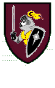

Dorian's Own
A collection of short stories that follow Rick Avery's journey from boyhood as a gypsy foundling to a holy knight in the service of the goddess Dorian. Set in the fantasy world of Orelar and based on characters from a GURPS roleplaying game. Adult content.The Loves of Sir Richard
A thousand years before Rick Avery was born, he lived another life as a Tarlakian knight, Sir Richard Riktov. Based on characters from a GURPS game. Adult content.The Empire Chronicles
A series of stories from a GURPS game of the late 1980s. Starring Belden Kaylaros, the destined but reluctant hero; Harold Ethelbald, the ambitious and unscrupulous nobleman; and Wildfire, the impetuous sorceress.'Dem Bones
From the Black Swamp, a group of skeletons set out in search of the legendary Throne of Bone. Based on the popular trading-card game, Magic: The Gathering.Santa's Daughter
A new holiday legend, in which young Noelle must save Christmas from the evil Witch of the Ice.The Reindeer that Wasn't
When a stork leaves a dragon's egg at the North Pole, the reindeer try to raise the hatchling as one of their own.Offering
One girl is chosen from the village. Adult content, mature readers only please.The Wedding Day
A rhyming account of events that took place on the day we became Tim and Christine Morgan.The Ravishing of Constance
On the island of Veradoga, the governor's daughter finds she has more to fear from her own brother than from the pirates that plunder the seas. Mature readers only.Jocasta
A retelling of the Oedipus myth from the queen's point of view. Mature readers only, please.Good Girl Revenge
Busty, sassy rock star Bluette helps innocent Maeve Colwyn avenge herself on her rat of a boyfriend,in this story written for Brian Vigue. Mature readers only, please.
Safe Sucks
A mother's disapproval is only the least of the complications when Kyra Rand is ready to take herrelationship with the sexy Donovan to a new level. Mature readers only, please.
Ties that Bind
The alluring elven owner of the Lord's Retreat puts on excellent performances, both public and private.Mature eyes only, please. Set in the world of the author's fantasy novels.
Infernal
Corruption at a girls' school prompts a guardian angel to descend into Hell, only to fall into the clutches ofa lecherous demon. Mature readers only; this is the author's dirtiest work to date. <eg>
Inspired by a Story Ideas thread on Literotica, where the story's also posted and can be voted on (hint, hint).
The Last Vigil
A bittersweet tale of a fallen, and forgotten, hero.Like what you've read? Try more:
Published works by Christine
Morgan
The Silver Doorway
children's books
The Trinity Bay
horror novels
Sabledrake's
author page on Literotica
-- mature readers only!
Gargoyles
fanfiction
Other
fanfiction